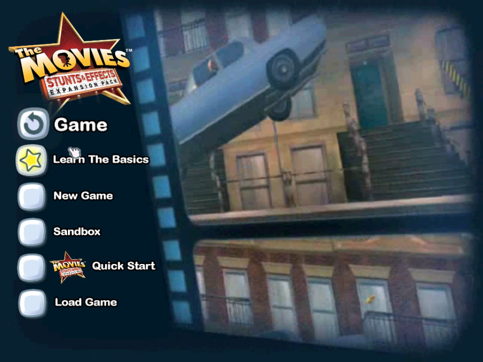
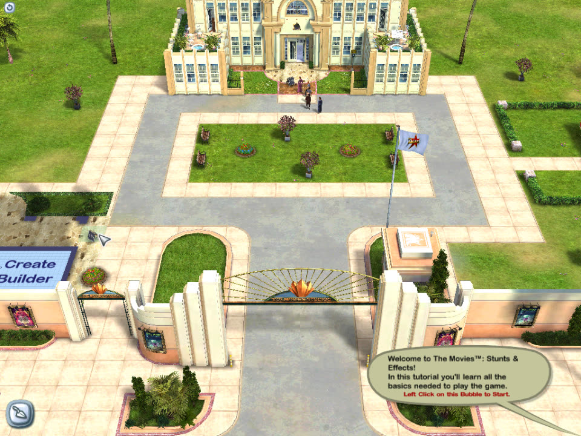
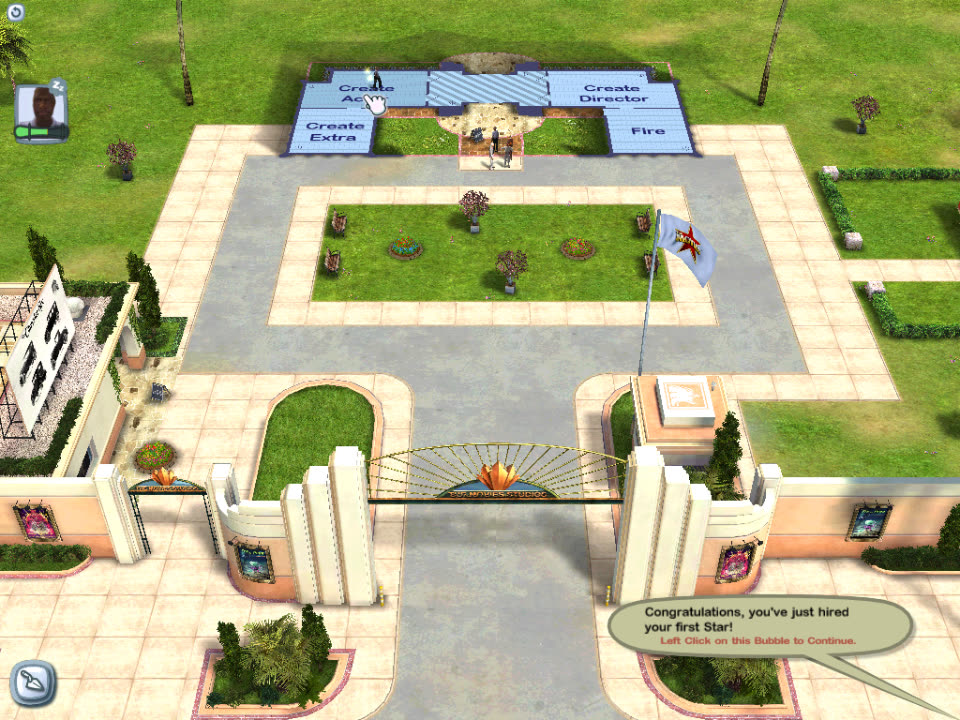

The real game
Every line of game logic is the original machine code, translated to WebAssembly ahead of time. Not a remake.
Now showing · in your browser
Run your own Hollywood studio again. The original 2006 game, recompiled to WebAssembly: no emulator, no installer, just a browser tab.
Get started


Every line of game logic is the original machine code, translated to WebAssembly ahead of time. Not a remake.
Point the page at your installed game. Files are read on your computer; nothing is uploaded and no game files are hosted here.
Settings and saved studios are kept in your browser, so you can pick up where you left off.
The folder of your installed game: the one with MoviesSE.exe and Data.
The game opens in fullscreen. Click it to capture the mouse; Esc releases it.
— if the game stops with an error, the page sends its technical log, your browser version and graphics card model so the bug can be fixed. No game files or personal data.
Needs desktop Chrome or Edge with WebGPU, and the English The Movies: Stunts & Effects 1.2 (MoviesSE.exe from June 2006). The first start downloads about 30 MB.
No. The game's Windows program was statically recompiled: its x86 code was translated to C and compiled to WebAssembly. Direct3D runs on WebGPU, sound on Web Audio, and the game's movies are decoded with ffmpeg.wasm.
The game's models, sounds and movies belong to their owners and aren't hosted here. The page reads them from your installed copy, on your computer.
A current desktop Chrome or Edge. The game needs WebGPU and shared memory for its threads. Safari and Firefox aren't supported yet.
Some rarely used parts of the game aren't supported yet; voice-over recording is one of them. Tell me what happened and I'll look into it.
Thank you for asking! If you enjoy it, you can buy me a coffee. Bug reports help a lot too.